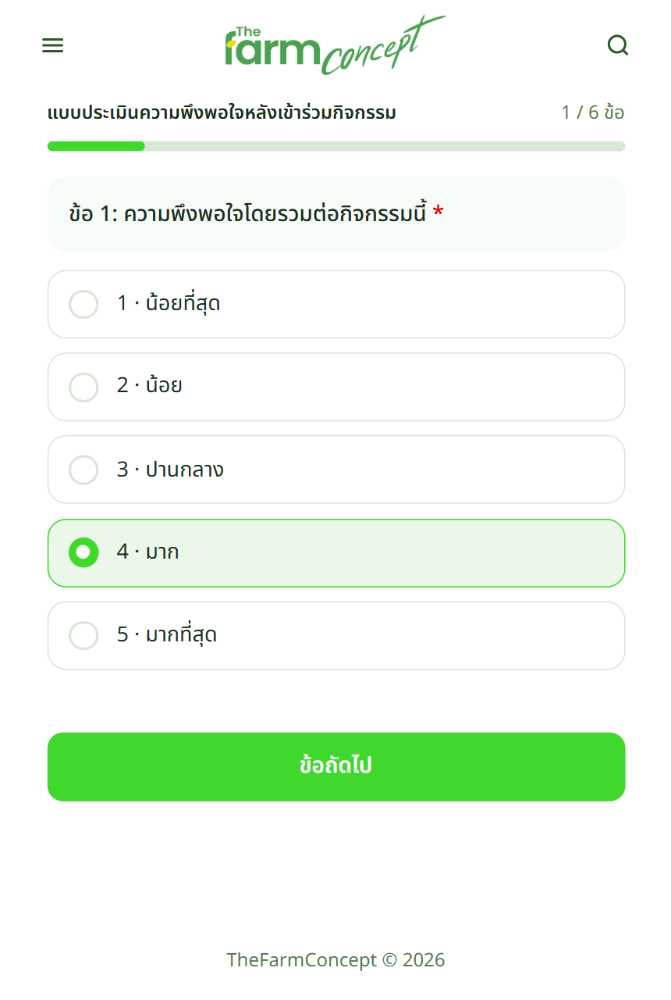
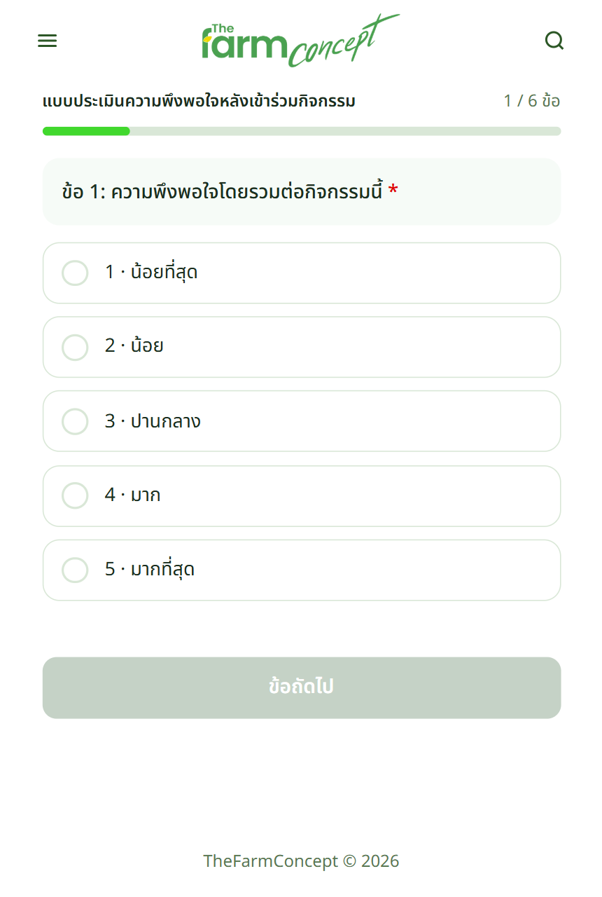
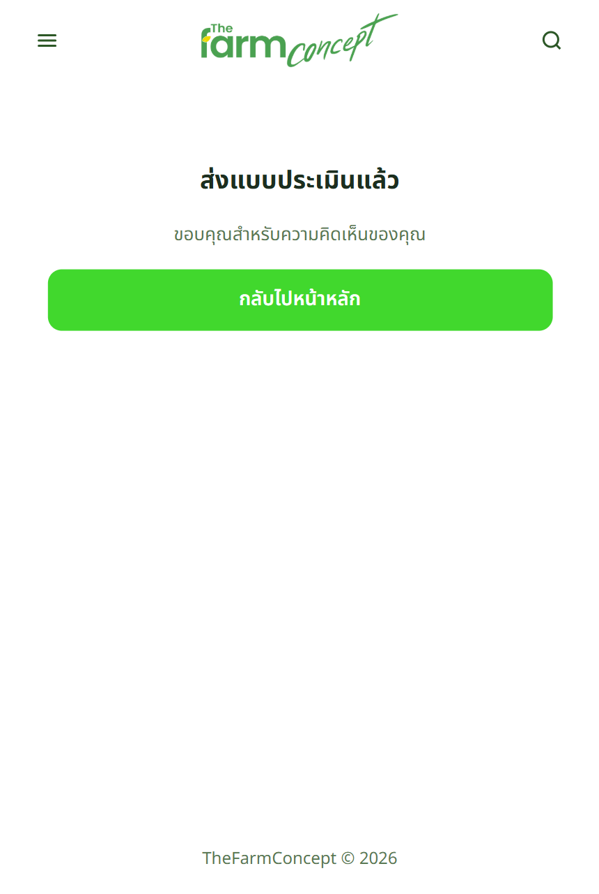
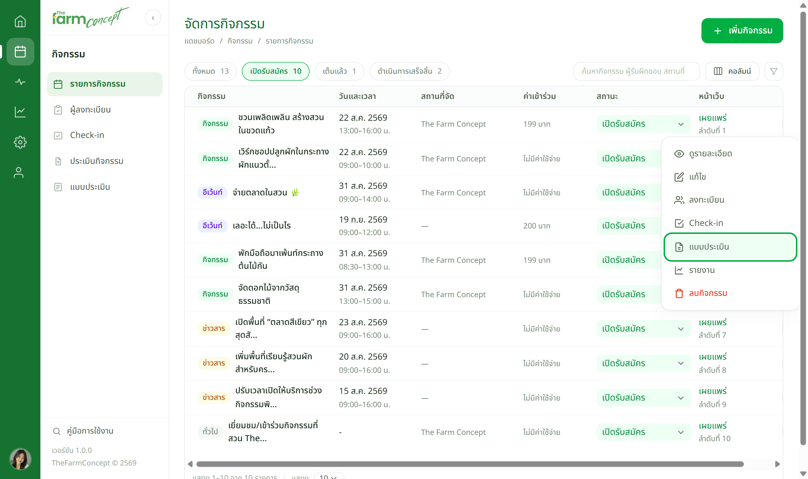
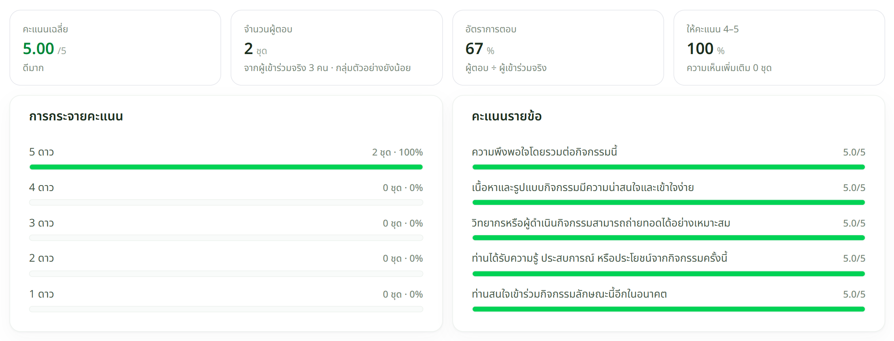
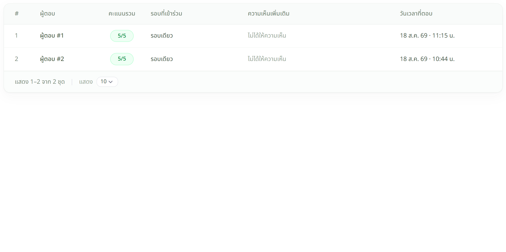

ผู้เข้าร่วม
ตอบจากมือถือ ทีละข้อ



ไม่ระบุชื่อ — ระบบไม่เก็บว่าใครตอบอะไร ตอบตามจริงได้เต็มที่ · ข้อที่มี * ต้องตอบก่อนไปข้อถัดไป
เจ้าหน้าที่
ดูผลคะแนน



ตารางไม่มีชื่อ เบอร์โทร หรือรหัสลงทะเบียน ไม่ใช่ข้อมูลขาด — เป็นข้อกำหนดของแบบประเมินแบบไม่ระบุตัวตน
ตัวเลขแต่ละตัวหมายถึงอะไร
| ตัวเลข | อ่านว่า |
|---|---|
| คะแนนเฉลี่ย | ค่าเฉลี่ยรวมทุกข้อ เต็ม 5 · ใต้ตัวเลขมีคำอธิบายระดับให้ เช่น "ดีมาก" |
| จำนวนผู้ตอบ | นับเป็น "ชุด" ไม่ใช่คน เพราะไม่รู้ว่าใครตอบ |
| อัตราการตอบ | ผู้ตอบ ÷ ผู้เข้าร่วมจริง (คนที่เช็กอิน) — ต่ำแปลว่าควรชวนให้สแกนตอนจบงานมากขึ้น |
| ให้คะแนน 4–5 | สัดส่วนคนที่พอใจมากถึงมากที่สุด ใช้รายงานผู้บริหารได้ตรง ๆ |
| คะแนนรายข้อ | บอกว่าจุดไหนได้คะแนนต่ำกว่าเพื่อน เช่น วิทยากร หรือเนื้อหา |
เจอปัญหาให้ทำอย่างไร
| อาการ | ให้ทำ |
|---|---|
| สแกนแล้วขึ้นว่ายังไม่เปิดแบบประเมิน | ยังไม่ถึงช่วงเวลาที่ตั้งไว้ หรือปิดไปแล้ว — แก้ที่ "ช่วงเวลาเปิด–ปิดระบบ" ในฟอร์มกิจกรรม |
| เมนู "แบบประเมิน" กดแล้วไม่มีข้อมูล | กิจกรรมนี้ยังไม่ได้ผูกแบบประเมินหลังกิจกรรม — กลับไปเลือกในส่วนที่ 3 ของฟอร์ม |
| อัตราการตอบต่ำมาก | ขึ้น QR บนจอตอนปิดงาน และบอกปากเปล่าอีกครั้ง ได้ผลกว่าส่งลิงก์ตามทีหลัง |
| อยากรู้ว่าใครให้คะแนนต่ำ | ดูไม่ได้โดยการออกแบบ — ถ้าต้องติดตามรายคน ให้ใช้แบบประเมินตอนลงทะเบียนแทน |